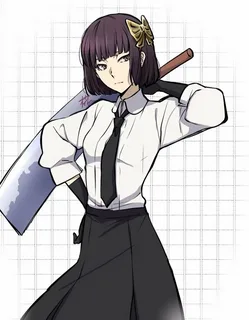

В центре сюжета история группы людей, обладающих сверхъестественными способностями.
Они используют свой талант для раскрытия особо опасных преступлений, раскрытия запутанных дел и выполнение миссий, порученных мафией.
Всех членов этого общества зовут, как всемирно известных писателей.
Самым ярким участником группы является восемнадцатилетний Ацуси Накаяма.
Он обладает уникальной способностью - превращаться в белого тигра.
Он недавно присоединился к компании и еще не научился контролировать свой дар.
Парень часто страдает от собственной неуверенности и зажатости, но превращаясь в дикого зверя может разорвать даже самого сильного соперника.
Ацуси попал в группировку благодаря Осаме Дадзаю.
Старший товарищ взял парня под свое крыло и научил правильно распоряжаться своим редким даром.
Сам Осама может обезвредить любого врага простым прикосновением.
Он ни раз пытался покончить с собой после смерти лучшего друга, но все попытки оборачивались неудачей.
Ацуши Накаджима (中島 敦 Nakajima Atsushi?) — главный персонаж манги и аниме-адаптации. Прежде, чем стать одним из детективов Вооружённого Детективного Агентства и учеником Осаму Дазая, жил в приюте, откуда его прогнали. Какое-то время находился в розыске. За его голову была назначена цена в семь миллиардов йен. Обладает способностью «Зверь Лунного Света». 
Осаму Дазай (太宰治 Dazai Osamu?) — второй главный персонаж манги и аниме-адаптации. Является одним из старших сотрудников Вооружённого Детективного Агентства и напарником Куникиды Доппо. Ранее входил в состав Исполнительного комитета Портовой Мафии и являлся напарником Чуи Накахары. Обладает способностью «Неполноценный Человек».
Доппо Куникида (國木田 獨歩 Kunikida Doppo?) — член Вооруженного детективного агентства и напарник Дазая. Обладает способностью "Поэзия Доппо".
Ранпо Эдогава (江戸川 乱歩 Rampo Edogawa?) ― детектив, способный моментально разрешить любую загадку, объясняющий это наличием у себя сверхъестественных способностей. Однако, на самом деле, он не обладает особыми способностями, а его блестящие расследования объясняются лишь его гениальным умом.
Акико Йосано (与謝野 晶子 Yosano Akiko?) — врач Вооруженного детективного Агентства, известная своей редкой способностью и особыми методами лечения. 